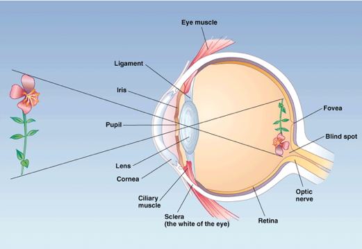

Vision
Background
Electromagnetic (EM) radiation

Wavelength or frequency
Intensity
Location/position of source
Reflects off some materials
Refracted (bent) moving through other materials
EM radiation provides information across space (and time)

- Reflectance spectra differ by surface {.smaller}


Color == categories of wavelength
- Eyes categorize wavelength into relative intensities within wavelength bands
- RGB ~ Red, Green, Blue
- Long, medium, short wavelengths
- Color is a neural/psychological construct


Parts of the eye
Cornea - refraction (2/3 of total)
Pupil - light intensity; diameter regulated by the Iris.
Lens - refraction (remaining 1/3; variable focus)
Retina - light detection
- ~ skin or organ of Corti
Pigment epithelium - regenerate photopigment
Muscles - move eye, reshape lens, change pupil diameter
Eye forms image on retina
Image inverted (up/down)
Image reverseed (left/right)
Point-to-point map (retinotopic)
Binocular and monocular zones

- Eyes views overlap


- The fovea
Central 1-2 deg of visual field
- ~ thumbnail @ arm’s length
Aligned with visual axis; center of gaze
Retinal ganglion cells pushed aside
Highest acuity vision == best for details
Acuity varies across the retina


What part of the skin is like the fovea?
Photoreceptors
- Photoreceptors detect light

- Rods
- ~120 M/eye
- Mostly in periphery
- Active in low light conditions
- One wavelength range
- Cones
- ~5 M/eye
- Mostly in center
- 3 wavelength ranges
- Photoreceptors “specialize” in particular wavelengths {.smaller}

Anatomy & Physiology, Connexions Web site. http://cnx.org/content/col11496/1.6/, Jun 19, 2013.
- Outer segment
- Membrane disks
- Photopigments
- Sense light, trigger chemical cascade
- Inner segment
- Synaptic terminal
- Light hyperpolarizes photoreceptor!
- The dark current
Retina…
- Physiologically backwards
- Dark current (more NT released in dark)
- Anatomically inside-out
- Photoreceptors at back of eye
- Retinal layers {.smaller}

- Bipolar cells
- Horizontal cells
- Retinal ganglion cells
- Amacrine cells
Center-surround receptive fields

- Center region
- Excites (or inhibits)
- Surround region
- Does the opposite
- Bipolar cells & Retinal Ganglion cells ->
- Most activated by “donuts” of light/dark
- Local contrast (light/dark differences)

From eye to brain

- Retinal ganglion cells
- 2nd/II cranial (optic) nerve
- Optic chiasm
- Hypothalamus
- Suprachiasmatic nucleus
- Regulates circadian (day/night) rhythm via pineal gland
- Suprachiasmatic nucleus

Figure 13.25: https://en.wikipedia.org/wiki/Retinohypothalamic_tract
- Superior colliculus & brainstem
Lateral Geniculate Nucleus (LGN) of thalamus
- ~90% of axons from retina

- 6 layers + intralaminar zone
- Parvocellular (small cells): chromatic
- Magnocellular (big cells): achromatic
- Koniocellular (chromatic - short wavelength?)
- Retinotopic map of opposite visual field
- From LGN to V1
- Via optic radiations
- Primary visual cortex (V1) in occipital lobe
Human V1

- V1 has retinotopic map

How the maps are measured via fMRI.
- Fovea overrepresented in map
- Analogous to somatosensation
- High acuity in fovea vs. lower outside it
- Upper visual field/lower (ventral) V1 and vice versa
V1 has laminar, columnar organization

- 6 laminae (layers)
- Input: Layer 4
- Output: Layers 2-3 (to cortex), 5 (to brainstem), 6 (to LGN)
- Columns
- Orientation/angle
- Spatial frequency


- Feature detection or spatial frequency tuning?

- Columns
- Color/wavelength
- Eye of origin, ocular dominance (in ocular dominance columns)
- Ocular dominance signals retinal disparity
Beyond V1

Larger, more complex receptive fields - Dorsal stream (where/how) + Toward parietal lobe - Ventral stream (what)

{kind=link}
{kind=link}
{kind=link}
{kind=link}
{kind=link}
{kind=link}